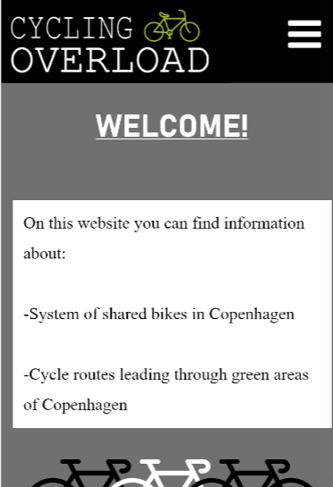
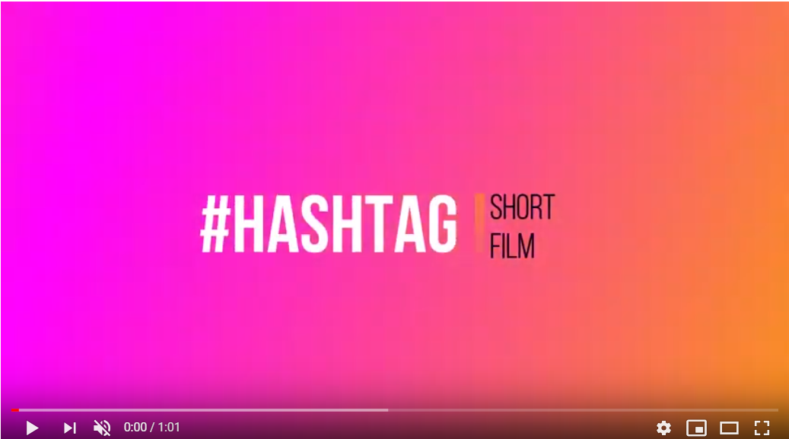
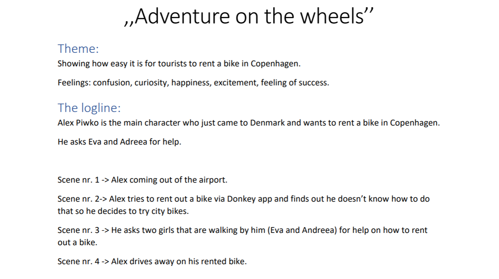
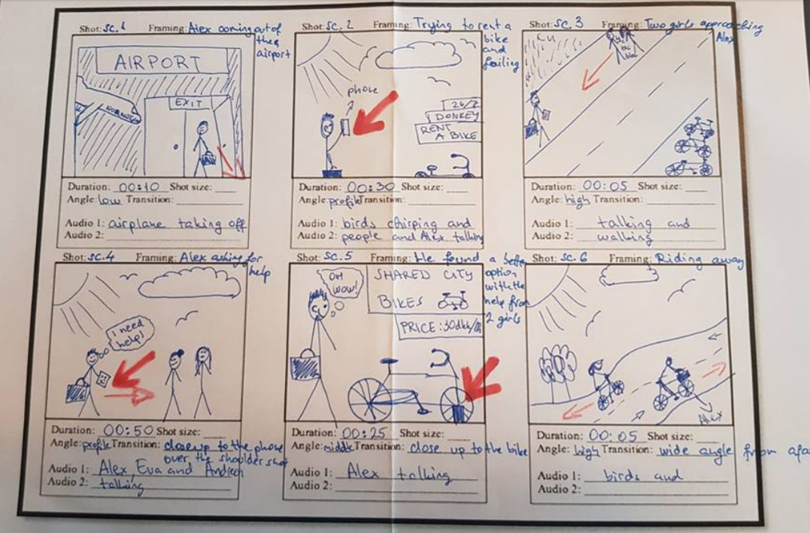
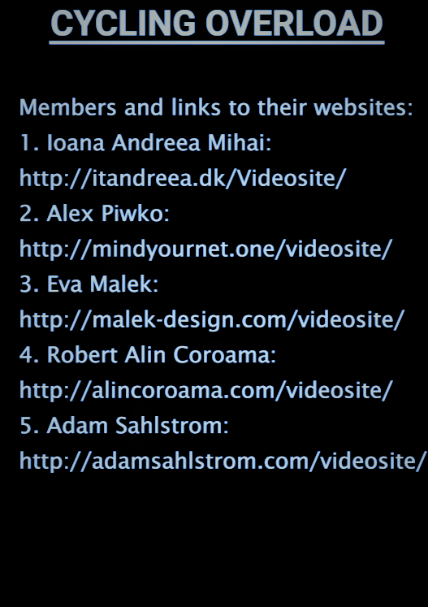
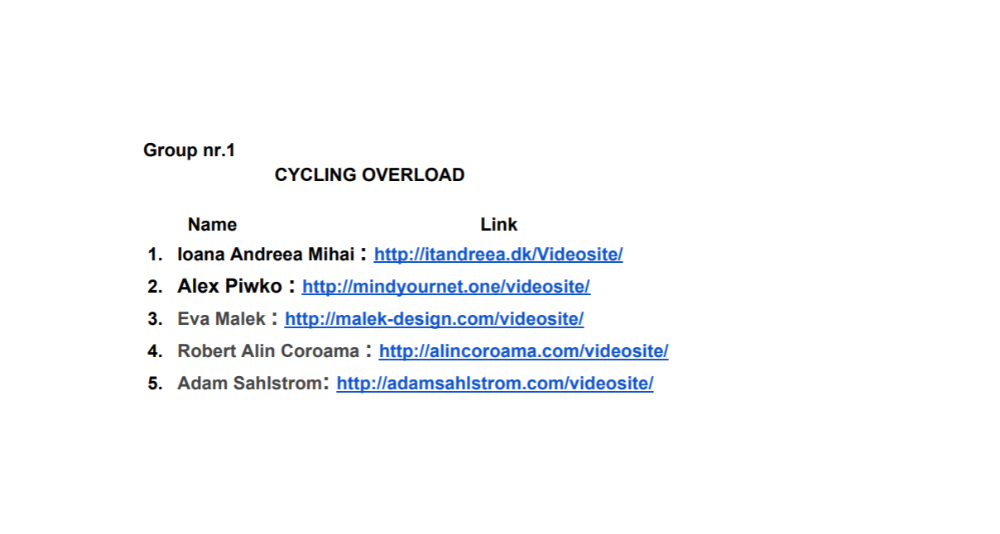

Basic Content
It takes both sides to build a bridge - Fredrik Nael
During the study of this theme I experienced for the first time, after a long time, team work.
This theme has focused on both design and coding.
02.01.02. XD Prototype
02.01.03. Link to Video:Story without words
02.01.05.Treatment
02.01.07 Storyboard
02.01.08. Documentation
02.01.09. PDF with Links to micro site(final)
